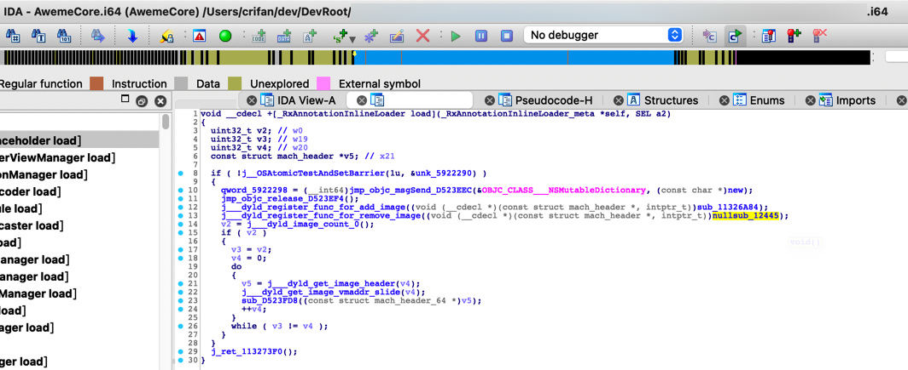

命名和含义
TODO：
- 【整理】IDA使用心得：常见名称及含义
- 【未解决】搞懂IDA中_D_objc_selrefs qword_38AF870 % 8的含义
此处整理IDA中，各处看到的，各种名称的命令规则的含义。
命名规则
IDA经常会自动生成假名字。他们用于表示子函数，程序地址和数据。根据不同的类型和值假名字有不同前缀
- IDA常见命名意义
- sub 指令和子函数起点
- locret 返回指令
- loc 指令
- off 数据，包含偏移量
- seg 数据，包含段地址值
- asc 数据，ASCII字符串
- byte 数据，字节（或字节数组）
- word 数据，16位数据（或字数组）
- dword 数据，32位数据（或双字数组）
- qword 数据，64位数据（或4字数组）
- flt 浮点数据，32位（或浮点数组）
- dbl 浮点数，64位（或双精度数组）
- tbyte 浮点数，80位（或扩展精度浮点数）
- stru 结构体(或结构体数组)
- algn 对齐指示
- unk 未处理字节
- 字节相关
- db=1个字节
- dw=2个字节
- dd=4个字节
举例
- sub
- sub_11326A84
- sub_11326A84
- unk
- unk_5922000
- unk_5922000
- qword
- qword_3A97BE0
- qword_3A97BE0


sub函数
关于sub函数的一些细节说明：
sub_xxx：普通的函数（有代码处理逻辑的）- 比如去改名的话，可以改名叫做：
- sub_BinaryOffset
- sub_AddressInsideBinary
- 比如去改名的话，可以改名叫做：
nullsub_xxx：空函数（没有任何代码逻辑的）
此处给出实例：
举例：
【未解决】研究抖音越狱检测逻辑：_RxAnnotationInlineLoader的load
中的：
void __cdecl +[_RxAnnotationInlineLoader load](_RxAnnotationInlineLoader_meta *self, SEL a2)
{
。。。
j___dyld_register_func_for_add_image((void (__cdecl *)(const struct mach_header *, intptr_t))sub_11326A84);
j___dyld_register_func_for_remove_image((void (__cdecl *)(const struct mach_header *, intptr_t))nullsub_12445);

- _dyld_register_func_for_add_image传入的函数：sub_11326A84
- 就是个普通的，内部有代码逻辑的函数：
- 就是个普通的，内部有代码逻辑的函数：
- _dyld_register_func_for_remove_image传入的函数：nullsub_12445
- 从名字看，就知道：是个null的 空的 函数
- 进入看，果然是空的，啥也没有


具体含义
qword
对于qword：
- 常常是：常量字符串
- 偶尔是：其他类型
- 比如字典的指针等等
详见：
- 【已解决】IDA中抖音AwemeCore中字符串const char* qword_3893908的原始字符串
- 【已解决】iOS逆向心得：如何从对x8的adrp和ldr计算出对应的qword字符串值
- 核心逻辑是：
- qword_xxx的xxx是二进制内偏移量 + 二进制的ALSR = 实际（字符串的）地址
- 去查看： [实际（字符串的）地址] = （即可查看到）保存了对应的字符串
- 核心逻辑是：
- 【整理】iOS逆向心得：IDA中的unk的含义